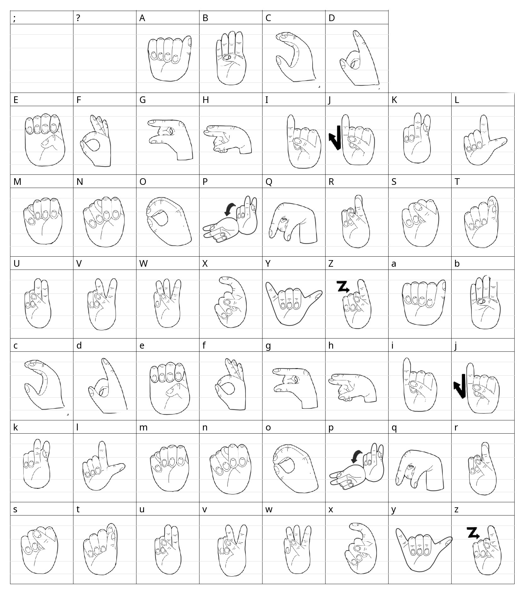

Sage
Age: 22, Teacher
works with deaf students and would like to communication better
Hands Up! aims to create a space for learning South African Sign Language that is interactive and accessible to all ages. The final deliverable for my Digital Arts Project is a proof-of-concept prototype that hints at future functionality. This is the first mobile product that I have ever created. To find my final rubric and reflection, with references for WSOA4105, click here
UX/UI Design, Illustration, Front-End Development
Write up about why this app is relevant. AKA stats of SASL speakers and the ability to teach young children and parents SASL for communication
Design proces used aka double diamond process
this app is aimed to be a non-profit application to making learning accessible
The user research was conducted by providing a short questionaire to 22 people. I tried to vary the group of people by asking friends
who have majored in language during university and deaf potential users. The questions on this survey included:
The personas listed below are summarized findings of my user research that encompasses core goals of the potential user base.
Age: 22, Teacher
works with deaf students and would like to communication better
Age: 12, student
communicate better with deaf aunt
Age: 47, Father
Interested in using sign language to communicate with his toddler after reading about the ability to teach non-verbal children
Age: 42, Business Owner, Deaf
Natasha is partially deaf and has grown up speaking. As she faces this transition to struggle with verbal communication, she would like to learn sign language
The persona creation and user research resulted in a few frequent observations. Users would like more interactivity in their learning of sign language. Alot of the availble content consist of video tutorials. For more engaging learning, users would benefit from hands-on learning. Another important insight is that there is a lack of content regarding the learning of South African Sign Language for younger kids. This means that it would be advantageous to create a product that is colourful and fun illustrations. The use of colour is therefore emphasized as bold and interesting colour is enjoyable to younger audiences.
A user journey maps out the emotions and actions that drive the user to use the application. This aids in the identification of goals and motivations for the user. This summarizes the intended effect of Hands Up!

This user flow map is helpful in two ways: This aids in the planning of the architecture of the site yet also aids in highlighing important features needed based on user research. Since interactivity is a key want of the user, access to quizzez and AI Interactions should be a core feature and therefore easily availble via first pick-up of the app. This user flow also promotes basic UI Guidelines easy navigation. Benyon (2013) explains that a key factor of enjoyable user experience is ensuring a low cognitive load for the user. This can be excuted by ensuring that key features do not take more that three clicks/touches to naivgate to.
The design process that I followed was the Material UI Design system by Google. MUI is widely used, mainly for Android development yet Googles interface is
experienced cross-platform and therefore represents a convention of UI design (Clifton 2015, pp22). Since my application is cross-platform I chose to follow this system of guidelines.
Some key features that have been implemented in the design process are choices of typography, elevation and navigation labelling.
When creating my style guide, I ensured that I adhered to core priciples of MUI. In regard to typography, I have chosen to ensure that my enitre site is
presented in a highly readable and accessible fonts. For this reason, I chose sans-serif fonts. MUI states that expressive fonts should be avoided for important information as these fonts are diffucult to read
and clutter the page.
The colours were chosen with two factors in mind: appeal to a wide age range and contrast. Blue, red and yellow are the primary colours and are therefore
a classic palette. While keeping colour theory in mind, blue tends to represent Trustworthiness and Intelligence. Since this is a learning application, these are
emotions I would like to be encompassed in Hands Up! Pink was selected because this is a more soft colour that is fun and appealing. The boldness of yellow contrasts greatly against dark blue and also adds a
streak of boldness to capture the attention of the user. I have shifted these values to create my main colour palette. Babich (2020) states that a key concept of using color is balancing the use of colour and suggests breaking
up a triadic scheme into a main colour, featuring 60% of the space followed by colour 2 for 30% and colour 3 for 10%. I have made blue my main colour as my chosen shade is dark
enough to subsitute the use of black. Yellow is the least featured colour despite being a mustard shade because yellow does not contrast well against other colours and therefore can lesson the
readability. My secondary colours are derivitive tints of primary colours and red and greens to indicate right and wrong.
I initally began the process of designing a logo by brainstorming. Seen above are rough sketches of different variations of logos. I knew that I wanted a hand to be featured in the logo but in a manner that was creative and reflected the style guide. For the second iteration of the app, I was inclined towards a hand in a peace sign or 'y' pose and filling in the rest of the square icon space with shapes to construct a type of South African flag. This, upon inspection and testing seemed to be confusing as the South African flag does not use the colour palette primarily and therefore this design was abandoned. I realized for recognition, a simple hand with an added feature would be the best approach in order to create brand identity. For this reason, I chose a hand speech bubble logo.
For the logo, I knew that I wanted to include elements that looked hand drawn. There has been a recent spike in what is known as corporate tech art, which tends to make use of rounded flat shaded vector drawings. These seemed a bit lifeless to me and banal. Based on my feedback, users would like an app that makes learning fun and playful. I have ensured that elements still look polished by creating a logo that is flat shaded and minimally designed, yet I have added simple line art using a pencil brush to establish texture and convey a sense of naivity. The pencil marks also hold important utility: they solidifty that the shape is of a hand by adding detail. This creates a balanced brand identity that can both be trustworthy and professional while allowing space for play and fun. Here I have explored the logo variations in size and colour to ensure consistent branding. The simplicity of the logo lends itself to toggle between the primary colours of the product.

The illustration of the signing content across Hands Up! was created using Procreate. I had to redrawn my original Adobe Illustrator black and white illustrations as they were extremely flat and lifeless. In this iteration of illustrations, I used to primary design guide colours and added pencil draw lines for more information. These illustrations are therefore aesthetically aligned with the logo design.
In order to convey the movement attached to signing, I have created 2D animations for phrases and letters that are not static signs.
I decided to add a translation feature. This required a custom font. I had no prior experience creating a custom font so this was a huge learning opportunity. In order to create a font, a vector or bitmap is required rather than a raster image. This proved difficult as I have remedial skills in regard to the pen tool in illustrator. I used my original pngs created in procreate as a reference to recreate them in Illustrator. This redraw process which took up a lot of time could have been avoided, had I originally used Illustrator for all images. Despite this, I have created a font that can be easily installed on computers and devices which can be found here.
This text will be changed to fingerspelling using my SASL font.
write up of high fidelity wireframes
Teachable machine is an in-browser open source software that allows for easy training of models that forgoes the use of python rendering. I chose Teachable Machine because I have not worked with computer vision before. This made training easy as I had to upload images of sign poses and export the model as a Tensorflow file. I trained the model for fingerspelling using over 500 pictures for each letter and using 4 different hands. This means that the model is quite small and therefore is glitchy when in use at times.
Tensorflow.js is a platform that supports the creation and training of models and the deployment of these models into production. Tensorflow was originally a python framework yet the creation of the Javascript form helps to deploy models onto the internet quickly. Tensorflow is a lot easier to use in the browser as opposed to a Native Application. Tensorflow and React Native is still in its infancy and there is even less support for Expo development. The solution to this was using PyTorch. I created a simple image recognition application using PyTorch and Expo yet there was a major issue: this method required creating and training neural networks using python if I wanted to use my own models. As SASL is incredibly low resource, I would have to use my own model and thus I decided that learning python for a simple feature intergration within the time frame for final submission would be unattainable. This proved diffucult and therefore creating a working mobile intergration of the models was not possible. To combat this, I have used my trained models in my website. I would like to intergrate the AI into my application following the submission of DAP as I have thourougly enjoyed exploring artificial intelligence.
React Native is a typescript framework that allows for cross-platform development. I have chosen to use React Native because I have understanding of JavaScript and the basic concepts of component creation and hooks because of Interactive Media. This seemed like the obvious method to develop an application rather than creating indivdual applications for iOS and android respectively. This process was a long period of learning and therefore majority of this semester has consisted of self-learning. The adaptation from web to mobile has been a bigger leap than initally anticipated. Regardless of this, I believe that I have managed to produce a satisfactory prototype. Expo has been use for easy deployment in the future and support for distrubuting my application. Expo also allowed me to test the application on my own devices without switching operating systems or having to change my development environment to Android Studio. I initally began development using only the React Native CLI rather than expo because there are more modules and dependacies available in this mode of development yet I found the mix of Java and Typescript alot to handle and I found that I did not require the external dependacies available to non-Expo development.
Feedback and Testing write up
I would like to thank a few people who helped make this possible. Thank you to Sage Govender, Kanistha Jadoo-Francis and Gabriel Tidy for consulting me through the process and offering their hands to train some AI. Sage is pursuing her Honours in Sign Language and provided indispenable feedback and ensured the readability of the content and correct training of modals. Gabriel encouraged my exploration of Machine Learning and taught me the basics of what computer vision entails. Gabriel has been a wealth of knowledge and support through the project. Finally Kanistha for spending hours infront of a web camera posing for teachable machine and giving me feedback on the UX/UI. I would not have been able to create a project to be proud of without the support of my loved ones.